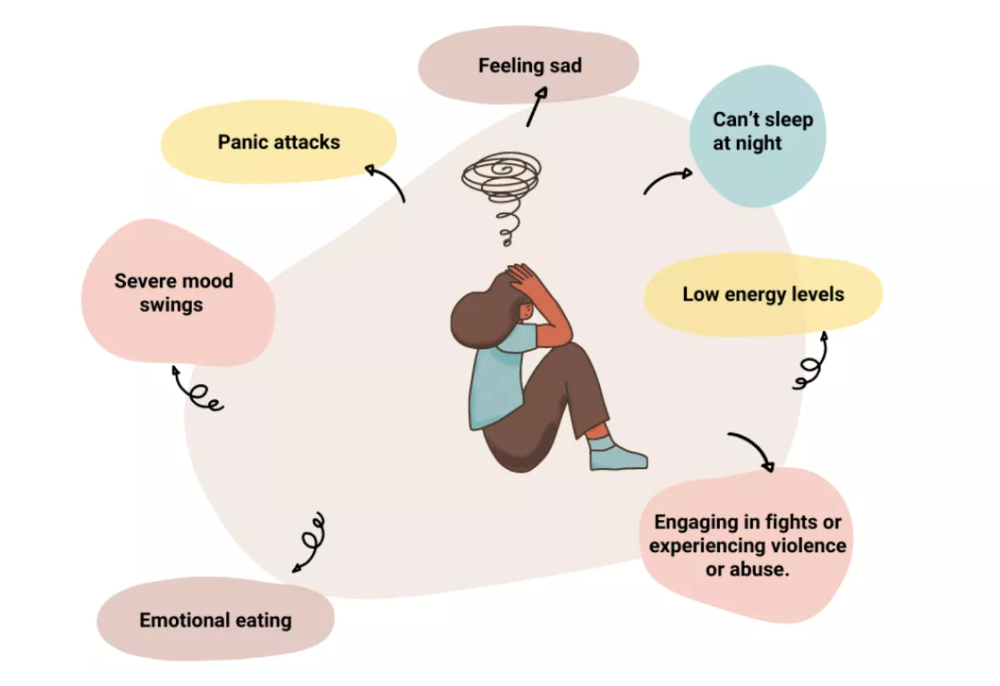

Mental health problems can affect the way a person feels, thinks, and behaves. Some signs may appear gradually, while others may become more noticeable over time.

Recognising these signs early can help individuals seek support before their mental health becomes worse.
Signs of mental health difficulties can appear gradually and may sometimes be overlooked at first. Changes in behaviour, mood, or daily routines can be indicators that a person may be experiencing emotional distress.
It is also important to understand that not everyone experiences symptoms in the same way. Some individuals may show clear emotional changes, while others may withdraw from social activities or lose interest in things they previously enjoyed.
Recognising these signs early can help people respond more effectively and seek help when necessary. Early support can often prevent problems from becoming more serious.